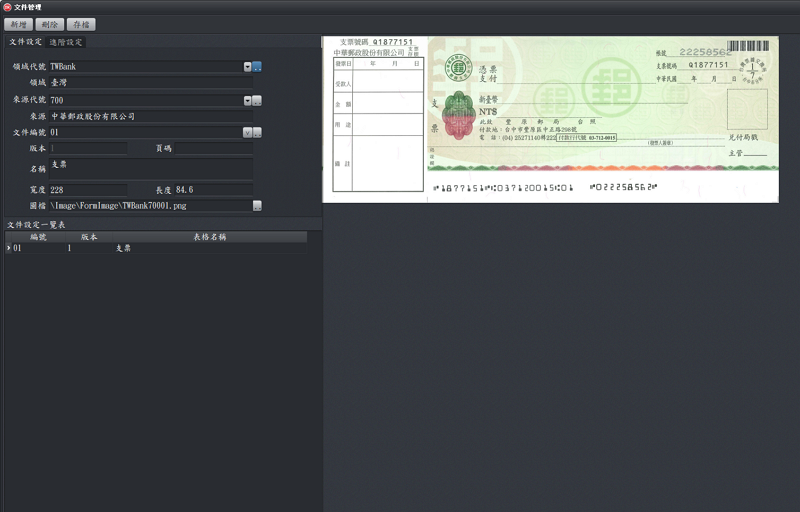
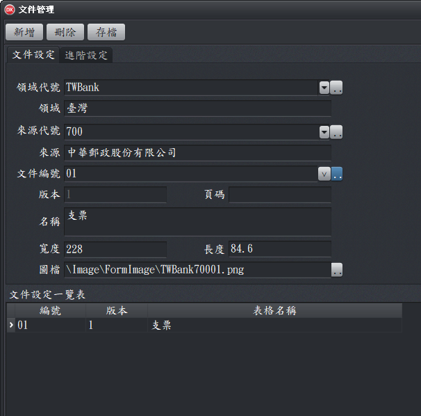
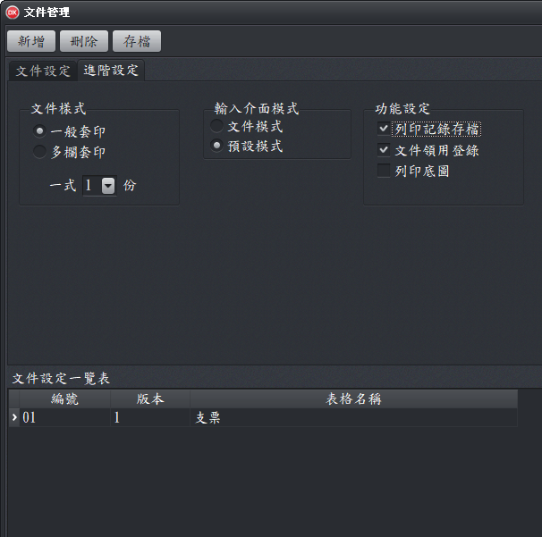

文件管理
文件管理視窗可以新增、刪除、修改文件相關資料(文件內容以外的資料)。

文件管理視窗全覽
文件設定工作頁
- 領域代號：設定文件來屬於那個領域(如ISMS、銀行、地區...)，彙整相關文件，以利於管理作業。(例如：TWBANK，臺灣金融業)
- 來源代號：設定文件的來源(如資產管理、○○銀行、臺灣...)，可用輸入代碼的方式，迅速找出該來源。(例如：700為中華郵政)
- 文件編號：用來區分不同的文件類型，例如支票、存取款條，以便管理文件。(例如：01為支票)
- ：開啟指定管理視窗，例如領域管理、來源管理、文件類型管理等資料的管理，以及加入文件圖檔。
- 圖檔：文件圖檔可用於設計文件套印內容時的底圖，以利使用者視覺化的操作及設定，因此文件圖檔的品質非常重要。

文件設定工作頁
進階設定工作頁
本工作頁是用於文件樣式及進階功能的設定，讓套印軟體知道要執行套印的文件的特性。

進階設定工作頁
- 文件樣式：
- 一般套印：一般的文件套印。
- 多欄套印：文件內容格式完全相同，但一次可以印出一個以上的文件。如郵寄標籤。
- 一式1份：預設就是按列印，只會印一份
- 輸入介面模式：
- 文件模式：輸入資料時，文件直接呈現，類似用手填寫文件的感覺。
- 預設模式：若輸入欄位在20個以下時，系統會自動產生輸入介面。無輸入欄位多寡，使用者可以自定輸入介面，以獲得更好的使用體驗
- 功能設定
- 列印記錄存檔：勾選此項目後，配合文件紀錄儲存設計，套印記錄就會自動存檔。(用於有票號的文件，為提供更多的服務，因此會有較嚴格的限制。本系統另外提供一個列印後即存檔的功能，可以叫出來修改、套印、重覆使用，以節省輸入的時間。
- 文件領用登錄：勾選此項目，配合文件領用登錄，在執行文件套印的過程中，套印軟體會先檢查已登錄之文件(如支票)數量是否足夠後，再帶出文件編號(票號)。
- 列印底圖：可以將文件(底圖)及輸入的資料一列印出來，免去事先印刷文件再進行套印的問題。